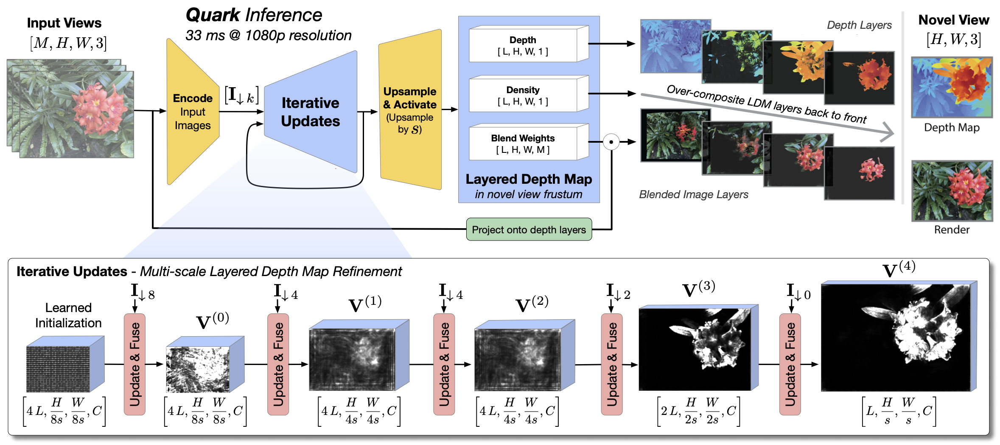
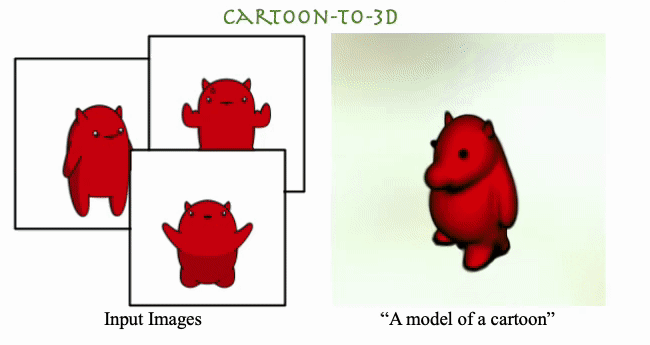

|
Srinivas Kaza
I work on Project Starline at Google. My research and engineering interests are related to comptuer graphics, vision, and ML. Before that, I spent time working at isee.ai. I received both my Masters (MEng) and undergraduate degrees from MIT, with a focus on computer graphics.
Email /
Scholar /
Github
|
|
Research
My primary interests are related to radiance fields, compression, and computational photography. As part of my research, I hope to create the building blocks needed for fast, robust 3D reconstruction.
|
|

|
Quark: Real-time, High-resolution, and General Neural View Synthesis
John Flynn*, Michael Broxton*, Lukas Murmann*, , Matthew DuVall, Clément Godard, Kathryn Heal, Srinivas Kaza, Stephen Lombardi, Xuan Luo, Supreeth Achar, Kira Prabhu, Tiancheng Sun, Lynn Tsai, Ryan Overbeck
SIGGRAPH Asia, 2024
We present a novel neural algorithm for performing high-quality, high-resolution, real-time novel view synthesis. From a sparse set of input RGB images or videos streams, our network both reconstructs the 3D scene and renders novel views at 1080p resolution at 30fps on an NVIDIA A100. Our feed-forward network generalizes across a wide variety of datasets and scenes and produces state-of-the-art quality for a real-time method. Our quality approaches, and in some cases surpasses the quality of some of the top offline methods. In order to achieve these results we use a novel combination of several key concepts, and tie them together into a cohesive and effective algorithm. We build on previous work that represent the scene using semi-transparent layers and use an iterative learned render-and-refine approach to improve those layers. Instead of flat layers, our method reconstructs layered depth maps (LDMs) that efficiently represent scenes with complex depth and occlusions. The iterative update steps are embedded in a multi-scale, UNet-style architecture to perform as much compute as possible at reduced resolution. Within each update step, to better aggregate the information from multiple input views, we use a specialized Transformer-based network component. This allows the majority of the per-input image processing to be performed in the input image space, as opposed to layer space, further increasing efficiency. Finally, due to the real-time nature of our reconstruction and rendering, we dynamically create and discard the internal 3D geometry for each frame, optimizing the LDM for each view. Taken together, this produces a novel and effective algorithm for view synthesis. Through extensive evaluation, we demonstrate that we achieve state-of-the-art quality at real-time rates.
|
|

|
DreamBooth3D: Subject-Driven Text-to-3D Generation
Amit Raj, Srinivas Kaza, Ben Poole, Michael Niemeyer, Nathaniel Ruiz, Ben Mildenhall, Shiran Zada, Kfir Aberman, Michael Rubenstein , Jonathan Barron, Yuanzhen Li, Varun Jampani
ICCV, 2023
We present DreamBooth3D, an approach to personalize text-to-3D generative models from as few as 3-6 casually captured images of a subject. Our approach combines recent advances in personalizing text-to-image models (DreamBooth) with text-to-3D generation (DreamFusion). We find that naively combining these methods fails to yield satisfactory subject-specific 3D assets due to personalized text-to-image models overfitting to the input viewpoints of the subject. We overcome this through a 3-stage optimization strategy where we jointly leverage the 3D consistency of neural radiance fields together with the personalization capability of text-to-image models. Our method can produce high-quality, subject-specific 3D assets with text-driven modifications such as novel poses, colors and attributes that are not seen in any of the input images of the subject.
|
|
|
Differentiable Volume Rendering using Signed Distance Functions
Srinivas Kaza
Gradient-based methods are often used in a computer graphics and computer vision context to solve inverse rendering problems. These methods can be used to infer camera parameters, material properties, and even object pose and geometry from 2D images.
One of the challenges that faces differentiable rendering systems is handling visibility terms in the rendering equation, which are not continuous on object boundaries.
We present a renderer that solves this problem by introducing a form of visibility that
is not discontinuous, and thus can be differentiated. This “soft visibility” is inspired by
volumetric rendering, and is facilitated by our decision to represent geometry within
the scene as a signed distance function. We also present methods for performing gradient descent upon distance fields while preserving Lipschitz continuity. Unlike most
differentiable mesh-based renderers, our renderer can optimize between geometry of
different homeomorphism classes in a variety of image-based shape fitting tasks.
|
|
{kind=link}